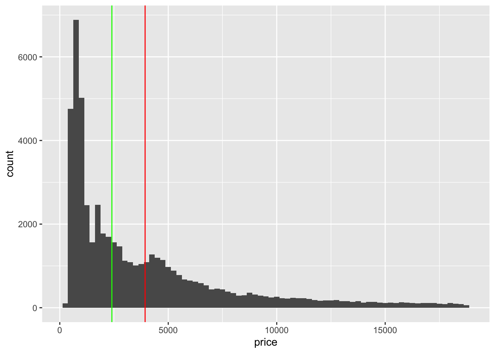
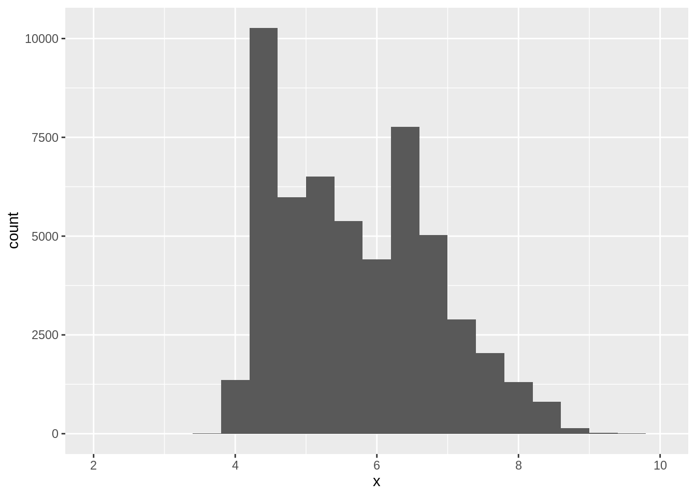

Revision 1 for exam 1
What tidyverse function would you use to extract rows?
a. filter()
- count()
- select()
- distinct()
- What tidyverse function would you use to extract colums?
- filter()
- count()
- c. select()
- distinct()
- To find the maximum number of times that a categorical variable appears which function should I use?
- filter()
- b. count()
- select()
- distinct()
- What does the “%>%” operator do?
a. used in tidyverse between layers of dplyr coding
b. used in ggplot to add more layers of coding
- Will this code run without an error? diamonds %>% mutate(price_hundred = price %/% 100)
- It will produce an error
- b. It will not produce an error
- What does the binwidth input in ggplot do?
- It controls the opacity of the plot
- It can be used to update the labels
- c. It controls the smoothness of a density plot
- It controls the size of dots
- What punctuation must be placed before a function or dataset to access more information?
- “.”
- “+”
- c. “?”
- “!”
- Where should the variable names go in the following line of code: ggplot(data = A) + B(mapping = aes(C))
- A
- B
- c. C
- What does the here package do?
- for data manipulation and display
- b. to organize files
- none of the above
Which of the following variables are discrete?
a. number of employees in a company.
- distance traveled to and from work
- taxes paid in 2019
- purchases from 2018
- What is the difference between distinct() and count()?
- they are the same
- b. distinct() gives the levels in a variable, count() gives the marginal distribution
- distinct() gives the marginal distribution, count() gives the levels in a variable
- What operator is used in ggplot?
- “.”
- b. “+”
- “?”
- “!”
Categorical variables
- Find the expected count for clarity VS1 and color I for a \(\chi^2\) distribution assuming independence.
\(8171\times 5422/53940\)
# A tibble: 8 × 10
clarity D E F G H I J marginal_clarity marginal_…¹
<ord> <int> <int> <int> <int> <int> <int> <int> <dbl> <dbl>
1 I1 42 102 143 150 162 92 50 741 6775
2 SI2 1370 1713 1609 1548 1563 912 479 9194 9797
3 SI1 2083 2426 2131 1976 2275 1424 750 13065 9542
4 VS2 1697 2470 2201 2347 1643 1169 731 12258 11292
5 VS1 705 1281 1364 2148 1169 962 542 8171 8304
6 VVS2 553 991 975 1443 608 365 131 5066 5422
7 VVS1 252 656 734 999 585 355 74 3655 2808
8 IF 73 158 385 681 299 143 51 1790 53940
# … with abbreviated variable name ¹marginal_color[1] 821.3415What proportion of the very good cut diamonds are colored I?
0.0997
# A tibble: 5 × 8
cut D E F G H I J
<ord> <dbl> <dbl> <dbl> <dbl> <dbl> <dbl> <dbl>
1 Fair 0.0241 0.0229 0.0327 0.0278 0.0365 0.0323 0.0424
2 Good 0.0977 0.0952 0.0953 0.0771 0.0845 0.0963 0.109
3 Very Good 0.223 0.245 0.227 0.204 0.220 0.222 0.241
4 Premium 0.237 0.239 0.244 0.259 0.284 0.263 0.288
5 Ideal 0.418 0.398 0.401 0.433 0.375 0.386 0.319 # A tibble: 5 × 8
# Groups: cut [5]
cut D E F G H I J
<ord> <dbl> <dbl> <dbl> <dbl> <dbl> <dbl> <dbl>
1 Fair 0.101 0.139 0.194 0.195 0.188 0.109 0.0739
2 Good 0.135 0.190 0.185 0.178 0.143 0.106 0.0626
3 Very Good 0.125 0.199 0.179 0.190 0.151 0.0997 0.0561
4 Premium 0.116 0.169 0.169 0.212 0.171 0.104 0.0586
5 Ideal 0.132 0.181 0.178 0.227 0.145 0.0971 0.0416- Which of the lines below is the mean, median, or mode?

- red is median, green is mean
- red is mean, green is mode
- red is mode, green is mean
- d. red is mean, green is median
- Is the mean or median a better measure of center in this distribution.
The mean is a better estimate in a a symmetric distribution, median in a skewed distribution

- Which plot is best at displaying outliers:
- histogram
- dotplot
- plot of proportions
- d. boxplot